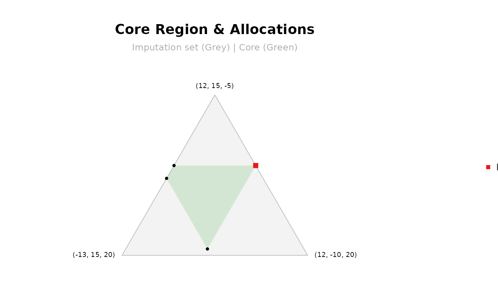
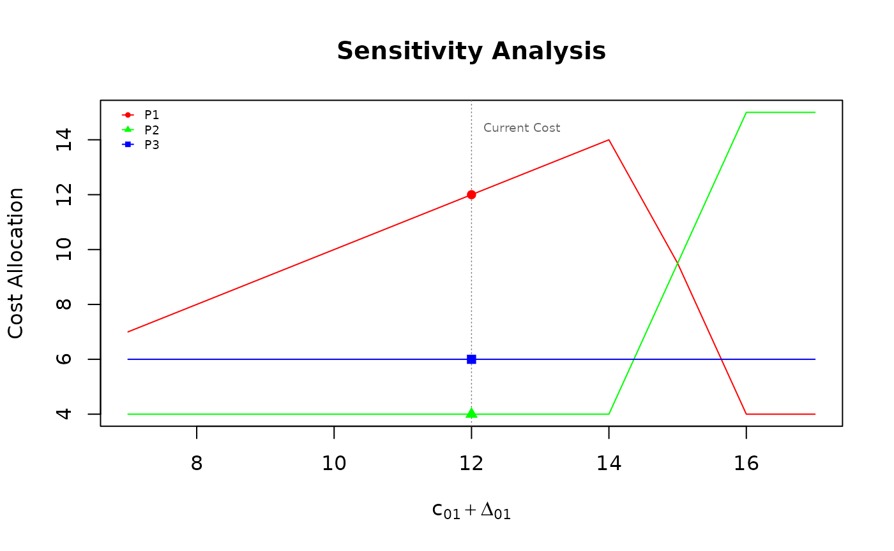

This demo runs the code from
demo("analysis_tools", package = "mcstprules") in R.
# =====================================================================
# mcstprules: Advanced Analysis & Stability Demo
# =====================================================================
# This demo explores the analytical tools available in the package.
# =====================================================================
library(mcstprules)
# Helper function to pause execution for interactive use
pause <- function() {
invisible(readline(prompt = "\n[Press Enter to continue...]"))
}
# ---------------------------------------------------------------------
# STEP 1: Defining the Problem
# ---------------------------------------------------------------------
# We define a cost matrix for a network with a source (node 0) and 3
# agents. Costs reflect the connection price between nodes.
costs <- data.frame(from = c(0, 0, 0, 1, 1, 2),
to = c(1, 2, 3, 2, 3, 3),
cost = c(12, 15, 20, 4, 6, 8))
print(costs)
#> from to cost
#> 1 0 1 12
#> 2 0 2 15
#> 3 0 3 20
#> 4 1 2 4
#> 5 1 3 6
#> 6 2 3 8
pause()
#>
#> [Press Enter to continue...]
# ---------------------------------------------------------------------
# STEP 2: Building the Input
# ---------------------------------------------------------------------
# Some functions accept two types of input:
# Option A: derive the game from the cost matrix
priv <- mcstGamePrivate(costs)
print(priv)
#> S v^p(S)
#> 1 {1} 12
#> 2 {2} 15
#> 3 {3} 20
#> 4 {1,2} 16
#> 5 {1,3} 18
#> 6 {2,3} 23
#> 7 N 22
#>
#> Solution: Shapley
#> 1 2 3
#> 3.5 7.5 11.0
# Option B: supply a characteristic function vector manually
vvals <- c(10, 12, 15, 20, 22, 25, 30)
vvals2 <- c(10, 10, 10, 15, 15, 15, 30)
pause()
#>
#> [Press Enter to continue...]
# ---------------------------------------------------------------------
# STEP 3: Core Stability Check
# ---------------------------------------------------------------------
# mcstCoreCheck() verifies whether a given allocation belongs to the
# core.
check1 <- mcstCoreCheck(game = priv)
print(check1)
#> -------------------------
#> Core Stability Analysis
#> -------------------------
#> Players (n) : 3
#> Efficiency : Passed (Sum x: 22.00 | v(N): 22.00)
#> Rationality : Passed
#>
#> Result: the allocation IS IN THE CORE (Stable)
check2 <- mcstCoreCheck(allocation = c(15, 10, 5), v = vvals)
print(check2)
#> -------------------------
#> Core Stability Analysis
#> -------------------------
#> Players (n) : 3
#> Efficiency : Passed (Sum x: 30.00 | v(N): 30.00)
#> Rationality : Failed
#>
#> Result: the allocation IS NOT IN THE CORE (Unstable)
#>
#> Blocking Coalitions (x(S) > v(S)):
#> S x(S) v(S) excess
#> {1} 15 10 5
#> {1,2} 25 20 5
plot(check2)
pause()
#>
#> [Press Enter to continue...]
# ---------------------------------------------------------------------
# STEP 4: Core Emptiness Check
# ---------------------------------------------------------------------
# mcstCorePoints() verifies whether the core is non-empty, returns its
# vertices and plot() renders the region.
cp1 <- mcstCorePoints(game = priv)
print(cp1)
#> -------------------------
#> Core Emptiness Analysis
#> -------------------------
#> Players (n) : 3
#> Total Cost : 22
#>
#> Result: the core IS NOT EMPTY
#> A feasible core allocation:
#> 1 2 3
#> 12 4 6
plot(cp1)
cp2 <- mcstCorePoints(v = vvals2)
print(cp2)
#> -------------------------
#> Core Emptiness Analysis
#> -------------------------
#> Players (n) : 3
#> Total Cost : 30
#>
#> Result: the core IS EMPTY
#> No allocation satisfies efficiency and coalitional rationality simultaneously
pause()
#>
#> [Press Enter to continue...]
# ---------------------------------------------------------------------
# STEP 5: Arc Sensitivity Analysis
# ---------------------------------------------------------------------
# How does an allocation rule respond to changes in a specific arc
# cost? mcstSensitivity() perturbs arc (i, j) by delta and tracks
# how each agent's payment evolves.
sens <- mcstSensitivity(costs, rule = "bird", arcs = c(0, 1))
plot(sens)
# =====================================================================
# Demo completed. Explore more with ?mcstRules
# =====================================================================You can also download the raw R script here to run it locally on your computer.